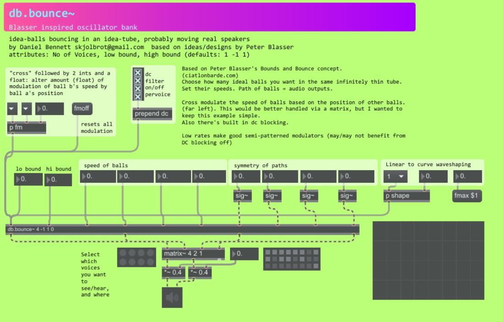

max msp
This page collects the externals I’ve built for MAX MSP. Two of my interests in computer music are the use of non-linear dynamic processes, and the creation of rhythms which imply but evade a sense of pulse. These externals follow from those interests. None of these are in any sense complete instruments. They are novel building blocks which I have used in my own music, and that could be used in 1000 other ways. The audio demos here are raw, to show the behaviour of the objects not examples of you would use them - that is left as an exercise for the reader.
cpg~ objects
A set of objects for working with Central Pattern Generator neural networks in MAX/MSP. See the project page here
hyperuniform~
A signal rate, “stochastic” rhythm generator. The process behind hyperuniform~ is my impressionistic take on the concept of “hyperuniformity in the disordered, jammed, packing of soft spheres”” as outlined in this paper. The object allows for direct control of some rhythmic elements within an overall stochastic rhythmic environment.
Externals, code and more info avaliable at github
Why?
First off, the overall shape of the thing is appealing to me: a fixed set of discrete units of time is strung together, and deformed, and this happens in a controllably random way. It has the potential to avoid the rhythmic grid, and strong repetition, while retaining patterning that the ear can follow.
It’s also slightly inspired by neuroscientific research on rhythm perception. Research suggests this is best modelled as both pulse-based and stochastic. It is thought that we anticipate the next rhythmic event based on previous events, but via a stochastic estimation mechanism (see e.g. Rhythm Music and the Brain by Thaut).
bounce~
This is my implementation and slight development of an audio synthesis technique described by Peter Blasser of Ciat Lonbarde fame. In simple terms it is a bank of chaotic triangle wave oscillators. The behaviour of the oscillators can be imagined, very roughly, as following the path of a group of imaginary balls bouncing around in a gravity and friction-free tube. When a ball hits another ball, or hits the top or bottom of the tube, it reverses its direction of travel. The paths of these balls are output as waveforms. With a single ball this is a crude (non-bandlimited) triangle oscillator, but when you add a couple more, things become much more interesting. This is great for patterned-but-unpredictable LFOs, or if you like noisy textural synthesis (and I do) for audio.
features of my implementation:
- control over triangle slope
- waveshaping (to pseudo-sinusoid or hyperbolic sine)
- control of voice-to-voice frequency modulation (position of ball A modulates the speed of ball B, etc.)
- optional antialiasing adapted from the polynomial transition region technique. (You can turn this off if if you just want to use if as an LFO.)
It’s best suited to quite specific, textural use cases, but if you like this sort of thing (rythmically articulated digital chaos!) it’s a lot of fun. I think it’s very expressive and very playable, and I use it for live performances quite often. Here are some (not very musical) demos

henon~
This is a sonification of the Hénon map equation. It produces interesting noise textures in certain parts of its parameter space, and interesting transitions between noise and pitch in others. There is a choice of interpolation methods (drop sample, linear and b-spline) which affect the sound character considerably. I built this as a framework for sonifying other non-linear equations. I tried a few other equations out, but the Hénon map was probably the most usueable I found. It’s very simple to substitute in other equations you’re interested in. Just swap out my au_henon_calc function for one calculating the equation of your choice, then change the parameter inputs to match.